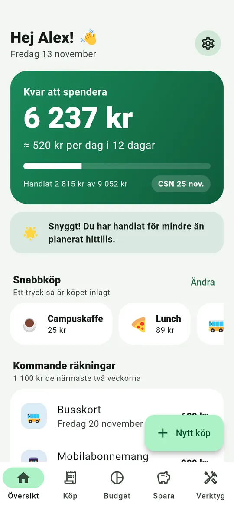
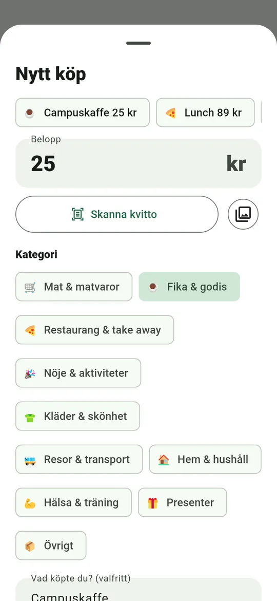
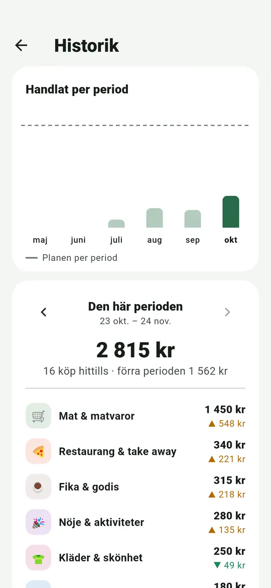
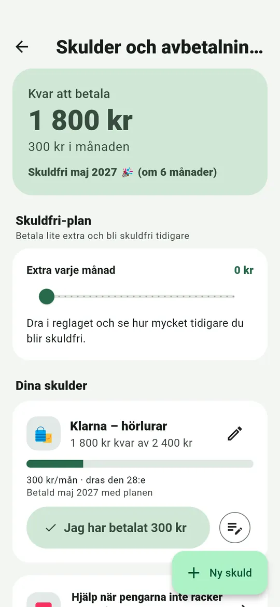
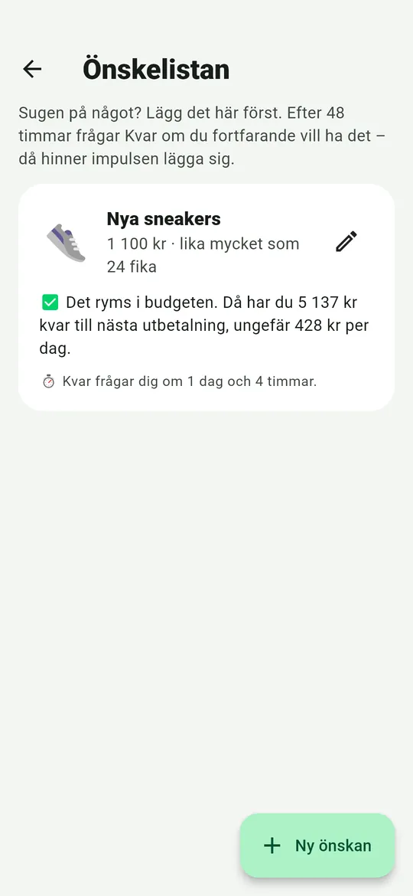
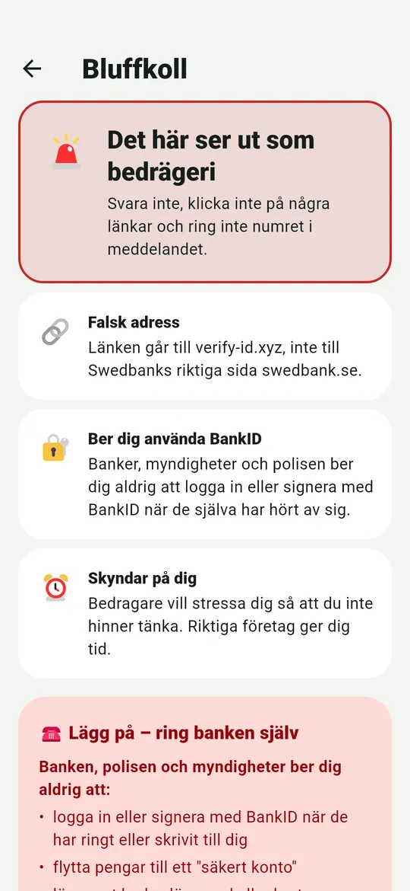

Svensk budgetapp · Gratis · Utan reklam
Se hur mycket du har kvar.
Kvar räknar ut vad du kan spendera per dag fram till nästa lön, CSN eller pension – och är snäll när det går fel. Allt stannar i din telefon.
⬇ Ladda ner Kvar för AndroidVersion 0.3.0 · 52,8 MB · Android 7 eller nyare · Så installerar du
- 🔒 Ingen inloggning
- 🪪 Inget BankID
- 🚫 Ingen reklam
- 📱 Din ekonomi stannar i telefonen

Gjord för hur pengarna kommer in
Kvar vet när pengarna kommer – även när lönedagen är en helg eller röd dag – och ger dig förslag som passar just dig.
Studerande
Koll på CSN-dagen, studentrabatter och att pengarna räcker ända till nästa utbetalning.
Vuxen
Lön efter skatt med Skatteverkets tabeller, räkningar med datum och sparmål som faktiskt blir av.
Pensionär
Pensionsdagen den 18:e eller 19:e, tydlig text och Bluffkoll som varnar för bedragare.
Allt du behöver – inget du inte behöver
Kvar är byggd för att vara enkel att använda varje dag, och snäll de dagar det går mindre bra.
Kvar per dag
Se direkt vad du kan spendera per dag fram till nästa utbetalning.
Snabbknappar
Lägg in jobbkaffet eller lunchen med ett enda tryck – även från en widget på hemskärmen.
Importera från banken
Hämta köpen från en fil från din bank. Kvar sorterar dem efter butik. Utan BankID och utan att koppla ihop Kvar med banken.
Skanna kvitton
Fota kvittot så läser Kvar av summan och butiken, direkt i telefonen.
Börja om
Blev månaden dyrare än tänkt? Gör en ny plan för dagarna som är kvar – utan pekpinnar.
Veckans sammanfattning
En minut på söndagskvällen: så gick veckan, och så mycket har du per dag framåt.
Historik
Månad för månad och per kategori – som att du har fikat för 3 400 kr i år.
Skulder och avbetalningar
Klarna, lån och CSN på ett ställe, med påminnelse dagen innan och datumet när du blir skuldfri.
Önskelistan
Sugen på något? Kvar visar om det ryms i budgeten och frågar igen efter 48 timmar.
Bluffkoll
Klistra in eller dela ett sms eller mejl, så letar Kvar efter tecken på bedrägeri.
Lön efter skatt
Räkna ut lön eller pension efter skatt för alla kommuner – utan internet.
Automatiska kopior
Kvar sparar en extra kopia av din data varje dag och lägger tillbaka den av sig själv om något går fel.

Mindre skrivande
Ett tryck på en snabbknapp, en bild på kvittot eller en fil från banken. Kvar kommer ihåg dina butiker och sorterar åt dig.

Se vart pengarna tar vägen
Period för period och kategori för kategori, jämfört med förra månaden. Utan skam – bara fakta du har nytta av.

Bli skuldfri – med en plan
Lägg in Klarna, lån och CSN. Kvar visar när du blir skuldfri och hur mycket tidigare det går om du betalar lite extra. Räcker inte pengarna finns gratis hjälp, och Kvar berättar var.

Kan jag kosta på mig det?
Lägg det du är sugen på i önskelistan. Kvar visar om det ryms – och frågar efter 48 timmar om du fortfarande vill ha det. Ofta har suget gått över, och pengarna finns kvar.

Bluffkoll – innan du klickar
Fått ett konstigt sms? Dela det till Kvar. Bluffkoll letar efter falska adresser, "logga in med BankID", "säkert konto" och andra varningstecken. Extra tydligt för pensionärer.
Så installerar du Kvar
Kvar finns inte på Google Play ännu, så du laddar ner appen här. Det tar ungefär en minut.
- Ladda ner appen på din Android-telefonTryck på Ladda ner Kvar högst upp. Filen heter kvar.apk.
- Öppna filenTryck på nedladdningen i aviseringen, eller öppna appen Filer och leta under Nedladdningar.
- Tillåt installationenTelefonen frågar om webbläsaren får installera okända appar. Tryck på Inställningar, slå på Tillåt från den här källan och gå tillbaka.
- Tryck på InstalleraVisar Google Play Protect en varning, välj att installera ändå. Varningen kommer för alla appar som inte finns på Google Play.
- Klart!Öppna Kvar och följ de första stegen. Det tar några minuter.
Har du en Samsung?Om installationen stoppas av Automatisk blockering kan du stänga av den under Säkerhet i telefonens inställningar medan du installerar, och slå på den igen efteråt. Kvar finns kvar.
Ny version?Ladda ner den här och installera den ovanpå den gamla. Allt du har lagt in finns kvar. Kvar letar inte efter uppdateringar själv, eftersom appen aldrig går ut på internet – titta in här ibland.
Ladda bara ner Kvar härifrån.Installera aldrig appar från länkar i sms eller mejl – det gäller alla appar, även Kvar.
Version 0.3.0, uppladdad 14 november 2026. För den som vill kontrollera filen: SHA-256 d4aea13fe4b6a1089590d70b49b7d9e452683f220722241baf1d0c7172204e30
Din ekonomi är din
- Ingen inloggning och inget konto – du behöver inte ens uppge din e-post.
- Inget BankID och ingen koppling till banken. Vill du importera köp väljer du själv en fil.
- Ingen reklam och ingen spårning.
- Allt du skriver in sparas i telefonen. Kvitton, bankfiler och meddelanden i Bluffkoll läses direkt i telefonen.
- Den här webbplatsen använder inga kakor och ingen spårning.
Vanliga frågor
Kostar Kvar något?
Nej. Kvar är gratis och har ingen reklam.
Varför finns Kvar inte på Google Play?
Kvar görs utan pengar, och det kostar att lägga upp appar på Google Play. Därför laddar du ner Kvar här tills vidare – helt gratis.
Är det säkert att installera Kvar så här?
Ja, så länge du laddar ner Kvar från den här sidan. Telefonen varnar för alla appar som inte kommer från Google Play, men det betyder inte att något är fel. Kvar behöver ingen inloggning och kan inte se ditt bankkonto.
Behöver jag BankID eller koppla ihop Kvar med banken?
Nej. Du skriver in köp själv, skannar kvitton eller importerar en fil som du laddar ner från banken.
Var sparas mina uppgifter?
I din telefon. Kvar har ingen server och skickar inte dina uppgifter någonstans. Läs mer i integritetspolicyn.
Vad händer om jag byter telefon?
Gå till Inställningar och välj Exportera under Säkerhetskopia. Skicka kopian till dig själv och importera den i Kvar på den nya telefonen.
Finns Kvar för iPhone?
Inte än. Kvar finns för Android just nu, och iPhone planeras längre fram.
Är Kvar kopplat till Skatteverket, CSN eller Pensionsmyndigheten?
Nej. Kvar använder öppna uppgifter, som Skatteverkets skattetabeller, men är inte kopplat till någon myndighet eller bank. Kolla alltid viktiga beslut med dem.